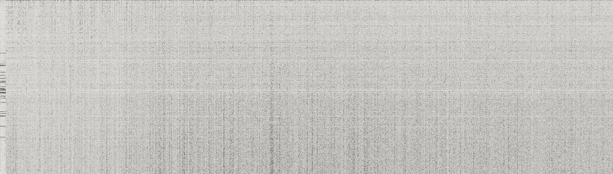
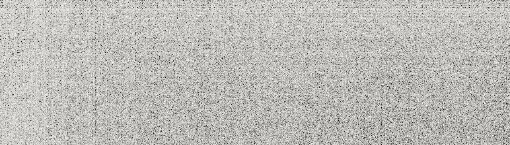

<!doctype html>
<html><head><meta charset="utf-8">
<style>
@font-face{font-family:Jost;src:url(fonts/jost.woff2) format("woff2");font-weight:100 900}
@font-face{font-family:Serif;src:url(fonts/serif.woff2) format("woff2")}
@font-face{font-family:Serif;font-style:italic;src:url(fonts/serif-i.woff2) format("woff2")}
@font-face{font-family:"Courier Prime";src:url(fonts/courier-prime.woff2) format("woff2")}
@font-face{font-family:Caveat;src:url(fonts/caveat.woff2) format("woff2");font-weight:400 700}
@font-face{font-family:Mono;src:url(fonts/mono.woff2) format("woff2");font-weight:100 900}
html,body{margin:0;background:#1B1A18;overflow:hidden}
#stage{position:relative;width:1080px;height:1920px;overflow:hidden;font-family:Jost,sans-serif;-webkit-font-smoothing:antialiased}
#cam{position:absolute;inset:0;transform-origin:540px 900px}
.a{position:absolute;box-sizing:border-box}
.c{left:0;width:1080px;text-align:center}
.serif{font-family:Serif;font-weight:400;letter-spacing:-0.01em}
.ty{font-family:"Courier Prime"}
.mono{font-family:Mono;font-variant-numeric:tabular-nums}
.w{display:inline-block;white-space:pre}
#cap{position:absolute;left:0;width:1080px;top:1490px;text-align:center;font-family:Jost;font-weight:500;font-size:58px;letter-spacing:-0.01em}
#cap span.box{display:inline-block;background:rgba(27,26,24,.92);color:#EDEBE6;border-radius:18px;padding:12px 30px 16px}
svg{position:absolute;overflow:visible}
img{position:absolute;display:block}
</style></head>
<body><div id="stage"><div id="cam"></div><div id="cap"></div></div>
<script src="vo.js"></script>
<script src="real.js"></script>
<script src="cte.js"></script>
<script>
// Catch the Error: an AI fixed another AI's brain (weight-space programming). The world: the operating notebook:
// the brand's paper and ink, an ink neural network whose edits are the logo's red dots, the real weight matrices of
// Qwen3.5-0.8B's layers 15 and 19, and Qwen's real looping output. check_colors.py must stay clean.
const PAPER='#E7E5E1', PAPER2='#D9D6D0', SHEET='#F4F1EA', INK='#1B1A18', INK2='#2A2926', INKL='#3A3936', SOFT='#57554F',
      GRAPH='#A6A49F', RED='#D8463A', REDL='#E8705F', OK='#5E7D5B', ONINK='#EDEBE6', ONINK2='#9C9A94';
// ---------- math ----------
const clamp=(x,a=0,b=1)=>Math.min(b,Math.max(a,x));
const lerp=(a,b,p)=>a+(b-a)*p;
const eo=x=>x<=0?0:x>=1?1:1-Math.pow(2,-10*x);
const ei=x=>x<=0?0:x>=1?1:x*x*x;
const eio=x=>x<=0?0:x>=1?1:x<.5?4*x*x*x:1-Math.pow(-2*x+2,3)/2;
const back=x=>{if(x<=0)return 0;if(x>=1)return 1;const c=1.7;return 1+(c+1)*Math.pow(x-1,3)+c*Math.pow(x-1,2);};
const seg=(t,t0,d,e=eo)=>e(clamp((t-t0)/d));
function hash(n){let x=Math.sin(n*127.1+311.7)*43758.5453;return x-Math.floor(x);}
const fmt=n=>Math.round(n).toLocaleString('en-US');
// ---------- voice timing ----------
const LINES={};for(const l of VO.lines)LINES[l.id]=l;
const S=id=>LINES[id].start, E=id=>LINES[id].end;
function wt(id,i){const l=LINES[id];const w=l.words[Math.min(i,l.words.length-1)];return w?w.s:l.start;}
function we(id,i){const l=LINES[id];const w=l.words[Math.min(i,l.words.length-1)];return w?w.e:l.end;}
const norm=s=>s.toLowerCase().replace(/[^a-z0-9]/g,'');
function wordIdx(id,word,from=0){const l=LINES[id];const k=l.words.findIndex((w,i)=>i>=from&&norm(w.w).startsWith(word));return k<0?0:k;}
const at=(id,word,from=0)=>wt(id,wordIdx(id,word,from));
function venv(t){for(const l of VO.lines){if(t>=l.start&&t<l.end&&l.env){return l.env[Math.min(l.env.length-1,Math.floor((t-l.start)*30))]||0;}}return 0;}
// ---------- text motion (the house rise) ----------
function rise(t,t0,d=.34,dy=22){const p=seg(t,t0,d);return `opacity:${p.toFixed(3)};transform:translateY(${((1-p)*dy).toFixed(2)}px);filter:blur(${((1-p)*5).toFixed(2)}px)`;}
function fade(t,t0,d=.3){return `opacity:${seg(t,t0,d).toFixed(3)}`;}
function arrive(t,t0,d=.42){const p=clamp((t-t0)/d);const s=p<=0?.82:lerp(.82,1,back(p));return `opacity:${clamp(p*3).toFixed(3)};transform:scale(${s.toFixed(4)})`;}
function ws(t,words,times,style=''){return words.map((w,i)=>`<span class="w" style="${rise(t,times[i]??times[times.length-1],.3,18)};${typeof style==='function'?style(i,w):style}">${w}${i<words.length-1?' ':''}</span>`).join('');}
function spoken(t,id,words,k=0,style=''){return ws(t,words,words.map((_,i)=>wt(id,k+i)-.06),style);}
function A(x,y,css,html){return `<div class="a" style="left:${x}px;top:${y}px;${css}">${html??''}</div>`;}
function C(y,css,html){return `<div class="a c" style="top:${y}px;${css}">${html??''}</div>`;}
function grain(dark){return `<svg width="1080" height="1920" style="left:0;top:0"><filter id="g${dark?1:0}"><feTurbulence type="fractalNoise" baseFrequency=".85" numOctaves="2" seed="${dark?9:4}"/><feColorMatrix values="0 0 0 0 ${dark?.9:.25}  0 0 0 0 ${dark?.88:.24}  0 0 0 0 ${dark?.85:.22}  0 0 0 ${dark?.035:.07} 0"/></filter><rect width="1080" height="1920" filter="url(#g${dark?1:0})"/></svg>`;}
function slug(t,dark){return A(70,150,`font-family:'Courier Prime';font-size:26px;letter-spacing:.12em;color:${dark?ONINK2:SOFT}`,`cte <span style="color:${RED}">/</span> THE AI THAT EDITS AIs`);}
function src(t,t0,text,dark=0,y=1700){return A(70,y,`${fade(t,t0,.3)};font-family:'Courier Prime';font-size:24px;letter-spacing:.04em;color:${dark?ONINK2:SOFT};width:940px`,text);}
// ---------- the red pen ----------
function wob(i,seed,amp){return amp*(Math.sin(i*.9+seed)*.6+Math.sin(i*2.3+seed*1.7)*.4);}
function penPath(pts,t,t0,d,w=7,col=RED){const p=eio(clamp((t-t0)/d));if(p<=0)return '';let L=0;for(let i=1;i<pts.length;i++)L+=Math.hypot(pts[i][0]-pts[i-1][0],pts[i][1]-pts[i-1][1]);
  return `<path d="M${pts.map(q=>q[0].toFixed(1)+' '+q[1].toFixed(1)).join(' L')}" fill="none" stroke="${col}" stroke-width="${w}" stroke-linecap="round" stroke-linejoin="round" stroke-dasharray="${L.toFixed(0)}" stroke-dashoffset="${(L*(1-p)).toFixed(1)}"/>`;}
function penUnder(x0,x1,y,t,t0,d=.35,w=8,seed=1){const n=24,pts=[];for(let i=0;i<=n;i++){const u=i/n;pts.push([lerp(x0,x1,u),y+wob(i,seed,3)+u*6-8*u*(1-u)]);}return penPath(pts,t,t0,d,w);}
function penStrike(x0,x1,y,t,t0,d=.25,w=8){const pts=[];for(let i=0;i<=16;i++){const u=i/16;pts.push([lerp(x0,x1,u),y+wob(i,4,2.5)-u*10]);}return penPath(pts,t,t0,d,w);}
function penRing(cx,cy,rx,ry,t,t0,d=.6,w=7,turns=1.25,seed=2,col=RED){const pts=[],n=120,a0=-2.3;for(let i=0;i<=n;i++){const u=i/n,a=a0+u*Math.PI*2*turns;const r=1+.05*Math.sin(3*a+seed)+.03*Math.sin(5*a+seed*2)+.03*u;pts.push([cx+Math.cos(a)*rx*r,cy+Math.sin(a)*ry*r]);}return penPath(pts,t,t0,d,w,col);}
function penTick(x,y,s,t,t0,d=.22,w=8){return penPath([[x,y],[x+s*.35,y+s*.4],[x+s,y-s*.55]],t,t0,d,w);}
function penX(x,y,s,t,t0,w=7){return penPath([[x,y],[x+s,y+s]],t,t0,.12,w)+penPath([[x+s,y],[x,y+s]],t,t0+.1,.12,w);}
function penArrow(x0,y0,x1,y1,t,t0,d=.3,w=6,bend=24){const pts=[];for(let i=0;i<=16;i++){const u=i/16;pts.push([lerp(x0,x1,u)+Math.sin(u*Math.PI)*bend,lerp(y0,y1,u)]);}
  const ang=Math.atan2(y1-pts[14][1],x1-pts[14][0]);const h=22;const hd=[[x1-h*Math.cos(ang-.5),y1-h*Math.sin(ang-.5)],[x1,y1],[x1-h*Math.cos(ang+.5),y1-h*Math.sin(ang+.5)]];
  return penPath(pts,t,t0,d,w)+penPath(hd,t,t0+d*.9,.12,w);}
function mark(t,t0,inner,kind='ring',d=.5,col=RED,w=7,seed=3){const p=eio(clamp((t-t0)/d));
  let path='',box='left:-10%;top:-24%;width:120%;height:148%';
  if(kind==='ring'){const pts=[];for(let i=0;i<=90;i++){const u=i/90,a=-2.3+u*Math.PI*2*1.2;const r=1+.04*Math.sin(3*a+seed)+.03*u;pts.push([50+Math.cos(a)*46*r,50+Math.sin(a)*44*r]);}path='M'+pts.map(q=>q[0].toFixed(2)+' '+q[1].toFixed(2)).join(' L');}
  if(kind==='strike'){box='left:-4%;top:0;width:108%;height:100%';path='M0 58 C30 52, 60 56, 100 46';}
  if(kind==='under'){box='left:-3%;top:84%;width:106%;height:22%';path='M0 40 C30 60, 70 30, 100 55';}
  const svg=p>0?`<svg viewBox="0 0 100 100" preserveAspectRatio="none" style="position:absolute;${box};overflow:visible;pointer-events:none"><path d="${path}" pathLength="1" fill="none" stroke="${col}" stroke-width="${w}" vector-effect="non-scaling-stroke" stroke-linecap="round" stroke-linejoin="round" stroke-dasharray="1 1" stroke-dashoffset="${(1-p).toFixed(4)}"/></svg>`:'';
  return `<span style="position:relative;display:inline-block">${inner}${svg}</span>`;}
function svgL(inner){return `<svg width="1080" height="1920" style="left:0;top:0">${inner}</svg>`;}
function note(x,y,t,t0,text,size=52,rot=-3,col=RED){return A(x,y,`${rise(t,t0,.3,10)};font-family:Caveat;font-weight:600;font-size:${size}px;color:${col};transform-origin:left;rotate:${rot}deg;white-space:nowrap`,text);}
// a real piece (screenshot), as a clipping taped to the page: slightly turned, a fold shadow, a credit under it
function clip(x,y,w,file,iw,ih,t,t0,rot=-1.2,inner='',credit='',dark=0){const h=w*ih/iw;const p=seg(t,t0,.45,back);
  return `<div class="a" style="left:${x}px;top:${y}px;width:${w}px;height:${h}px;opacity:${clamp((t-t0)/.15).toFixed(3)};transform:translateY(${((1-p)*80).toFixed(1)}px) rotate(${rot}deg);box-shadow:0 18px 0 -8px ${dark?INK2:PAPER2}">
   ${inner}
   ${credit?`<div class="ty" style="position:absolute;left:0;top:${h+22}px;font-size:22px;letter-spacing:.06em;color:${dark?ONINK2:SOFT};white-space:nowrap">${credit}</div>`:''}</div>`;}
// ---------- the network (ink, the logo's red dots for what gets edited) ----------
// layers of nodes; edges drawn once; pulses run along them so the brain is always "thinking"
function netNodes(L,N,x0,x1,y0,y1,seed=1){const cols=[];for(let i=0;i<L;i++){const n=N[i%N.length];const col=[];for(let j=0;j<n;j++){const x=lerp(x0,x1,i/(L-1))+(hash(seed+i*31+j)-.5)*14;const y=lerp(y0,y1,(j+.5)/n)+(hash(seed+i*17+j*7)-.5)*18;col.push([x,y]);}cols.push(col);}return cols;}
function network(t,o){const {nodes,red=[],ring=null,pulse=1,dark=0,edgeOp=1,r=13,show=1}=o;const ink=dark?ONINK:INK, faint=dark?'rgba(237,235,230,.22)':'rgba(27,26,24,.20)';
  let e='',p='',n='';const E=[];
  for(let i=0;i+1<nodes.length;i++)nodes[i].forEach((a,j)=>nodes[i+1].forEach((b,k)=>{if(hash(i*97+j*13+k)<.62){E.push([a,b,i,j,k]);}}));
  E.forEach(([a,b,i,j,k],q)=>{const vis=seg(show,(i/nodes.length)*.7,.3,x=>x);if(vis<=0)return;e+=`<line x1="${a[0].toFixed(1)}" y1="${a[1].toFixed(1)}" x2="${lerp(a[0],b[0],vis).toFixed(1)}" y2="${lerp(a[1],b[1],vis).toFixed(1)}" stroke="${faint}" stroke-width="2"/>`;
    if(pulse>0&&hash(q*3.1)<.33){const u=((t*.9+hash(q)*4)%1.6)/1.6;if(u<1)p+=`<circle cx="${lerp(a[0],b[0],u).toFixed(1)}" cy="${lerp(a[1],b[1],u).toFixed(1)}" r="4.2" fill="${ink}" opacity="${(pulse*.75).toFixed(2)}"/>`;}});
  nodes.forEach((col,i)=>col.forEach(([x,y],j)=>{const vis=seg(show,(i/nodes.length)*.7,.25,eo);if(vis<=0)return;const isR=red.find(q=>q[0]===i&&q[1]===j);const rr=r*(isR?1+.25*isR[2]:1)*vis;
    n+=`<circle cx="${x.toFixed(1)}" cy="${y.toFixed(1)}" r="${rr.toFixed(1)}" fill="${isR&&isR[2]>0?(isR[2]>=1?RED:dark?INK:PAPER):dark?INK:SHEET}" stroke="${isR&&isR[2]>0?RED:ink}" stroke-width="3.2"/>`;
    if(isR&&isR[2]>0&&isR[2]<1)n+=`<circle cx="${x.toFixed(1)}" cy="${y.toFixed(1)}" r="${(rr*isR[2]).toFixed(1)}" fill="${RED}"/>`;}));
  return svgL(`<g opacity="${edgeOp}">${e}${p}</g>${n}`);}
// ---------- scenes ----------
const SC=[];
function scene(t0,bg,draw,opt={}){SC.push({t0,bg,draw,...opt});}
const R=window.REAL;
const NET1=netNodes(6,[5,7,8,8,7,5],150,930,820,1380,3);

// 1 · the hook: an ink brain already firing; on "fixed" two of its dots turn red and the pen rings them
scene(0,PAPER,(t)=>{
  let h=grain(0)+slug(t,0);
  const fx=at('l01','fixed');
  h+=C(270,`font-size:76px;line-height:1.05;font-weight:500;color:${INK};letter-spacing:-0.03em;padding:0 70px`,ws(t,['An','AI','just','opened','up'],[-1,-1,-1,-1,-1]));
  h+=C(360,`font-size:118px;line-height:1.02;font-weight:500;color:${INK};letter-spacing:-0.04em`,ws(t,['another',"AI's",'brain,'],[-1,-1,-1]));
  h+=C(500,`font-size:126px;line-height:1;color:${RED}`,`<span class="serif" style="font-style:italic">${spoken(t,'l01',['and','fixed','it.'],wordIdx('l01','and'))}</span>`);
  const rp=seg(t,fx,.35,back);
  h+=network(t,{nodes:NET1,red:[[3,3,rp],[3,4,rp]],pulse:1});
  const [ax,ay]=NET1[3][3],[bx,by]=NET1[3][4];
  h+=svgL(penRing((ax+bx)/2,(ay+by)/2,64,86,t,fx+.12,.55,7));
  h+=note(((ax+bx)/2)+70,((ay+by)/2)-140,t,fx+.5,'the fix',58,-6);
  return h;
});

// 2 · "No retraining. 0.016%": 6,250 dots, one is red
scene(S('l02'),PAPER,(t)=>{
  const t0=S('l02');let h=grain(0)+slug(t,0);
  const rt=at('l02','retraining'), ch=at('l02','changed'), pc=at('l02','percent'), wg=at('l02','weights');
  h+=C(270,`font-size:110px;font-weight:500;color:${INK};letter-spacing:-0.04em`,`${spoken(t,'l02',['No'],0)} ${mark(t,rt+.35,spoken(t,'l02',['retraining.'],1),'strike',.28,RED,9)}`);
  // the number counts down to its smallness
  const p=seg(t,ch,Math.max(.5,pc-ch+.2),eio);
  h+=C(450,`${rise(t,ch-.05)};font-size:250px;line-height:1;font-weight:500;color:${INK};letter-spacing:-0.05em`,`${lerp(100,0.016,p).toFixed(3)}<span style="font-size:110px">%</span>`);
  h+=C(720,`${rise(t,wg-.05)};font-size:60px;color:${SOFT}`,`<span class="serif" style="font-style:italic">of its weights</span>`);
  // the field: 125 x 50 dots; one of them red (1 in 6,250 = 0.016%)
  const gx=102,gy=880,sp=7;const show=seg(t,t0+.15,.5);
  h+=`<svg width="1080" height="1920" style="left:0;top:0;opacity:${show.toFixed(3)}"><defs><pattern id="dots" width="${sp}" height="${sp}" patternUnits="userSpaceOnUse"><circle cx="${sp/2}" cy="${sp/2}" r="2" fill="${INK}" opacity=".55"/></pattern></defs><rect x="${gx}" y="${gy}" width="${125*sp}" height="${50*sp}" fill="url(#dots)"/></svg>`;
  const rx=gx+83*sp+sp/2, ry=gy+31*sp+sp/2, rp=seg(t,pc,.3,back);
  h+=svgL(`<circle cx="${rx}" cy="${ry}" r="${(9*rp).toFixed(1)}" fill="${RED}"/>`+penRing(rx,ry,34,34,t,pc+.15,.45,6));
  h+=A(102,gy+50*sp+30,`${rise(t,pc+.3)};font-family:'Courier Prime';font-size:30px;color:${SOFT};letter-spacing:.04em`,`6,250 dots. <span style="color:${RED}">1</span> changed. That's 0.016%.`);
  return h;
},{tr:'cut',punch:1.05});

// 3 · "six times better at math": the real post, the pen under its claim, 7.9 -> 48.1
scene(S('l03'),PAPER,(t)=>{
  const t0=S('l03');let h=grain(0)+slug(t,0);
  const sx=at('l03','six'), mt=at('l03','math');
  const W=900,k=W/597;
  const inner=svgL(penUnder(64*k,236*k,108*k,t,sx+.05,.35,6,4)).replace('width="1080" height="1920"','width="900" height="900"');
  h+=clip(90,250,W,'tweet.jpg',597,556,t,t0-.05,-1.4,inner,'@rikiyatakehi on X · Nov 2, 2026');
  // the claim, checked: 7.9 -> 48.1 on MATH-500
  h+=A(90,1180,`${rise(t,sx)};font-size:200px;line-height:1;color:${INK}`,`<span class="serif" style="font-style:italic">6×</span>`);
  h+=A(400,1210,`${rise(t,mt-.1)};font-family:Mono;font-size:56px;color:${INK};line-height:1.25`,`7.9% <span style="color:${RED}">→</span> 48.1%<br><span style="font-family:'Courier Prime';font-size:28px;color:${SOFT};letter-spacing:.06em">MATH-500 · same settings</span>`);
  return h;
},{tr:'whip',dir:1});

// 4 · "a giant web of numbers": push into the network; its edges turn into real weights
scene(S('l04'),PAPER,(t)=>{
  const t0=S('l04');let h=grain(0)+slug(t,0);
  const wb=at('l04','web'), nm=at('l04','numbers'), wg=at('l04','weights');
  const z=1+.9*seg(t,t0,1.8,eio);
  let inner=network(t,{nodes:NET1,pulse:1});
  // numbers on edges (real values from Qwen's layer 15)
  const vals=R.grid.flat();let lab='';
  for(let q=0;q<16;q++){const i=1+(q%4),j=(q*3)%NET1[i].length,k=(q*5)%NET1[i+1].length;const a=NET1[i][j],b=NET1[i+1][k];const x=lerp(a[0],b[0],.5),y=lerp(a[1],b[1],.5);
    const v=vals[q*3%vals.length];lab+=A(x-50,y-16,`${rise(t,nm+q*.05,.25,8)};width:100px;text-align:center;font-family:Mono;font-size:21px;color:${INK};background:${PAPER};border-radius:6px`,(v>=0?'+':'')+v.toFixed(4));}
  h+=`<div class="a" style="inset:0;transform-origin:540px 1100px;transform:scale(${z.toFixed(4)})">${inner}${lab}</div>`;
  h+=C(270,`font-size:80px;line-height:1.08;font-weight:500;color:${INK};letter-spacing:-0.03em;padding:0 80px`,spoken(t,'l04',['Every','AI','is','a','giant','web','of','numbers,'],0));
  h+=C(470,`font-size:120px;line-height:1;color:${INK}`,`<span class="serif" style="font-style:italic">${mark(t,wg+.3,spoken(t,'l04',['weights.'],9),'under',.35,RED,7)}</span>`);
  return h;
},{tr:'cut',punch:1.04});

// 5 · "Qwen 3.5 has 800 million": the real matrices scroll; the counter runs
scene(S('l05'),INK,(t)=>{
  const t0=S('l05');let h=grain(1);
  const qw=at('l05','qwen'), mi=at('l05','million');
  const sc=(t-t0)*60;
  h+=`<div class="a" style="left:0;top:${(560-sc).toFixed(1)}px;width:1080px;opacity:${seg(t,t0,.3).toFixed(3)}">
    
    <div class="ty" style="position:relative;font-size:22px;letter-spacing:.1em;color:${ONINK2};padding:14px 70px 30px">LAYER 15 · MLP OUT · 1,024 × 3,584 WEIGHTS</div>
    
    <div class="ty" style="position:relative;font-size:22px;letter-spacing:.1em;color:${ONINK2};padding:14px 70px">LAYER 19 · MLP OUT · 1,024 × 3,584 WEIGHTS</div></div>`;
  h+=A(70,150,`font-family:'Courier Prime';font-size:26px;letter-spacing:.12em;color:${ONINK2}`,`REAL WEIGHTS · Qwen3.5-0.8B · Hugging Face`);
  h+=C(250,`font-size:84px;font-weight:500;color:${ONINK};letter-spacing:-0.03em`,spoken(t,'l05',['This','one,'],0)+' '+`<span style="${rise(t,qw-.06)};display:inline-block">Qwen 3.5</span>`);
  const p=seg(t,qw+.2,Math.max(.6,mi-qw),eio);
  h+=C(1120,`${rise(t,qw)};font-family:Mono;font-size:118px;font-weight:600;color:${ONINK};letter-spacing:-0.03em;background:${INK};padding:16px 0`,`${fmt(p*800e6)}`);
  h+=C(1270,`${rise(t,mi)};font-size:64px;color:${ONINK2}`,`<span class="serif" style="font-style:italic">weights</span>`);
  return h;
},{tr:'pull'});

// 6 · the model card warns: the real line, the pen under it
scene(S('l06'),PAPER,(t)=>{
  const t0=S('l06');let h=grain(0)+slug(t,0);
  const wn=at('l06','warns'), lp=at('l06','loops'), st=at('l06','stuck');
  h+=C(270,`font-size:80px;line-height:1.05;font-weight:500;color:${INK};letter-spacing:-0.03em;padding:0 80px`,spoken(t,'l06',['And','its','own','model','card','warns:'],0));
  const W=900,k=W/704;
  const inner=svgL(penUnder(108*k,640*k,148*k,t,lp-.1,.5,6,6)).replace('width="1080" height="1920"','width="900" height="700"');
  h+=clip(90,520,W,'qwen_warn.jpg',704,482,t,wn-.25,1.1,inner,'Qwen/Qwen3.5-0.8B · model card · Hugging Face');
  h+=C(1290,`font-size:110px;line-height:1;color:${INK}`,`<span class="serif" style="font-style:italic">${spoken(t,'l06',['stuck','in','thinking'],wordIdx('l06','stuck'))} ${mark(t,lp+.15,spoken(t,'l06',['loops.'],wordIdx('l06','loops')),'ring',.55,RED,7)}</span>`);
  return h;
},{tr:'whip',dir:-1,cap:'l06',capEnd:()=>at('l06','stuck')-.05});

// 7 · the real problem; it finds 27
const PROB='What is the smallest positive perfect cube that can be written as the sum of three consecutive integers?';
function inkHead(t){return A(70,150,`font-family:'Courier Prime';font-size:26px;letter-spacing:.12em;color:${ONINK2}`,`REAL OUTPUT · Qwen3.5-0.8B · ${R.problem.toUpperCase()}`);}
scene(S('l07'),INK,(t)=>{
  const t0=S('l07');let h=grain(1)+inkHead(t);
  const an=at('l07','answer'), tw=at('l07','twenty');
  h+=A(70,250,`${rise(t,t0)};width:940px;font-family:'Courier Prime';font-size:40px;line-height:1.4;color:${ONINK}`,`<span style="color:${ONINK2};font-size:26px;letter-spacing:.12em">THE PROBLEM</span><br>${PROB}`);
  const L=['Wait, I need to check if N=1 is a solution.','1 = 3x+3 ⟹ 3x = −2. No integer solution.','Wait, I need to check if N=8 is a solution.','8 = 3x+3 ⟹ 3x = 5. No integer solution.','Wait, I need to check if N=27 is a solution.'];
  L.forEach((s,i)=>{h+=A(70,620+i*74,`${rise(t,t0+.25+i*.16,.25,10)};font-family:Mono;font-size:31px;color:${ONINK2}`,s);});
  h+=A(70,620+5*74,`${rise(t,an-.1,.3,10)};font-family:Mono;font-size:36px;font-weight:600;color:${ONINK}`,`27 = 3x+3 ⟹ x = 8. Integer solution exists.`);
  h+=svgL(penRing(104,1013,58,40,t,tw+.05,.5,7));
  h+=note(210,1110,t,tw+.35,'it got it.',64,-4,REDL);
  return h;
},{tr:'pen'});

// 8 · the loop: the real line, round and round the logo's ring, faster and faster, until the limit
scene(S('l07b'),INK,(t)=>{
  const t0=S('l07b');let h=grain(1)+inkHead(t);
  const wt0=at('l07b','wait'), th=at('l07b','thousand'), na=at('l07b','never'), aw=at('l07b','answered');
  const stop=na-.05, run=Math.min(t,stop)-t0;
  const spin=run*run*120+run*40;        // accelerating
  const cnt=Math.floor(Math.pow(clamp(run/(Math.max(th+.3,t0+1)-t0)),2.2)*1200);
  const cx=540,cy=900,r=330;
  const line=R.tail.replace(/\$/g,'');
  h+=`<svg width="1080" height="1920" style="left:0;top:0"><defs><path id="loop" d="M ${cx-r} ${cy} a ${r} ${r} 0 1 1 ${2*r} 0 a ${r} ${r} 0 1 1 ${-2*r} 0"/><path id="loop2" d="M ${cx-r+70} ${cy} a ${r-70} ${r-70} 0 1 1 ${2*(r-70)} 0 a ${r-70} ${r-70} 0 1 1 ${-2*(r-70)} 0"/></defs>
    <g transform="rotate(${(spin%360).toFixed(2)} ${cx} ${cy})"><text font-family="Mono" font-size="34" fill="${ONINK}" letter-spacing="1"><textPath href="#loop">${line} ${line}</textPath></text></g>
    <g transform="rotate(${(-spin*.7%360).toFixed(2)} ${cx} ${cy})" opacity="${clamp(run*.8).toFixed(2)}"><text font-family="Mono" font-size="26" fill="${ONINK2}"><textPath href="#loop2">${line} ${line}</textPath></text></g></svg>`;
  // the logo's ring, drawn by the pen around the loop
  h+=svgL(penRing(cx,cy,r+70,r+70,t,t0+.05,.7,8,1.15,4));
  h+=C(cy-90,`font-family:Mono;font-size:120px;font-weight:700;color:${t>=stop?RED:ONINK};letter-spacing:-0.03em`,`×${cnt>=1200?'1,200+':fmt(cnt)}`);
  h+=C(cy+50,`font-family:'Courier Prime';font-size:28px;letter-spacing:.14em;color:${ONINK2}`,'"WAIT, I NEED TO CHECK…"');
  if(t>=stop){h+=C(1380,`${arrive(t,stop,.35)}`,`<span style="display:inline-block;border:5px solid ${RED};color:${RED};font-family:'Courier Prime';font-weight:700;font-size:54px;letter-spacing:.1em;padding:14px 34px">TOKEN LIMIT · 32,768</span>`);
    h+=C(1530,`font-size:96px;line-height:1;color:${ONINK}`,`<span class="serif" style="font-style:italic">${spoken(t,'l07b',['And','never','answered.'],wordIdx('l07b','and',3))}</span>`);}
  h+=src(t,t0+.4,`exact count: 1,237 times · no final answer · the rerun's published samples (Hugging Face)`,1,1760);
  return h;
},{tr:'cut',punch:1.06});

// 9 · 85 of 96 hit the limit
scene(S('l08'),PAPER,(t)=>{
  const t0=S('l08');let h=grain(0)+slug(t,0);
  const ef=at('l08','eighty'), nn=at('l08','ninety'), lm=at('l08','limit');
  h+=C(260,`font-family:Mono;font-size:200px;font-weight:600;color:${INK};letter-spacing:-0.05em;line-height:1`,`<span style="${rise(t,ef-.05)};display:inline-block;color:${RED}">85</span><span style="${rise(t,nn-.05)};display:inline-block;color:${GRAPH}"> / 96</span>`);
  h+=C(500,`${rise(t,at('l08','practice')-.05)};font-size:60px;color:${SOFT}`,`<span class="serif" style="font-style:italic">practice answers hit the limit</span>`);
  // 96 cells: 85 rings (the loop), 11 ticks
  const gx=120,gy=690,s=70;let sv='';const OKS=[3,14,22,31,40,47,58,66,75,83,90];
  for(let i=0;i<96;i++){const c=i%12,r=Math.floor(i/12);const x=gx+c*s+s/2,y=gy+r*s+s/2;const d=ef+i*.022;const p=seg(t,d,.25,back);if(p<=0)continue;
    const loop=!OKS.includes(i);
    sv+=loop?`<circle cx="${x}" cy="${y}" r="${(24*p).toFixed(1)}" fill="none" stroke="${RED}" stroke-width="4" stroke-dasharray="150 40" transform="rotate(${((t*200+i*40)%360).toFixed(0)} ${x} ${y})"/>`:
      `<circle cx="${x}" cy="${y}" r="${(24*p).toFixed(1)}" fill="${INK}"/><path d="M${x-12} ${y} L${x-3} ${y+10} L${x+14} ${y-10}" stroke="${PAPER}" stroke-width="5" fill="none" stroke-linecap="round"/>`;}
  h+=svgL(sv);
  h+=src(t,lm,'85 of its first 96 practice answers ran to the 32,768-token limit · Takehi et al., MIT CSAIL',0,1300);
  return h;
},{tr:'pen'});

// 10 · researchers at MIT hand the raw weights to GPT-6 Astra
scene(S('l09'),PAPER,(t)=>{
  const t0=S('l09');let h=grain(0)+slug(t,0);
  const mi=at('l09','mit'), rw=at('l09','raw'), gp=at('l09','gpt'), as=at('l09','astra');
  h+=clip(80,240,920,'blog_title.jpg',1520,306,t,t0,-.8,'','rikiyat.github.io · Nov 2, 2026');
  h+=A(80,500,`${rise(t,mi-.05)};font-family:'Courier Prime';font-size:36px;color:${INK}`,`Takehi · Teoh · Zhang · Khattab — ${mark(t,mi+.2,'<b>MIT CSAIL</b>','ring',.45,RED,6)}`);
  // the weights stream from the matrix into the card
  const vals=R.grid.flat();let st='';
  for(let i=0;i<22;i++){const u=((t-rw)*1.1+i/22)%1;if(t<rw)break;const x=lerp(110,700,u)+Math.sin(i*2.1+u*6)*30,y=lerp(780,1260,u);st+=A(x,y,`opacity:${(Math.sin(u*Math.PI)).toFixed(2)};font-family:Mono;font-size:26px;color:${SOFT}`,(vals[i%vals.length]).toFixed(4));}
  h+=st;
  h+=A(240,1180,`${arrive(t,gp-.1,.45)};width:600px;background:${INK};border-radius:6px;padding:46px 40px;text-align:center`,
    `<div style="font-family:'Courier Prime';font-size:24px;letter-spacing:.16em;color:${ONINK2}">A FRONTIER MODEL</div><div style="font-size:92px;font-weight:500;color:${ONINK};letter-spacing:-0.03em;line-height:1.1">GPT-6 Astra</div>
     <div style="font-family:Mono;font-size:24px;color:${ONINK2};margin-top:10px">reading 0.8B weights${'.'.repeat(1+Math.floor((t*3)%3))}</div>`);
  return h;
},{tr:'whip',dir:1,cap:'l09'});

// 11 · the task, real: no training; make it better at math
scene(S('l10'),PAPER,(t)=>{
  const t0=S('l10');let h=grain(0)+slug(t,0);
  const tr=at('l10','training'), ma=at('l10','math');
  h+=A(70,280,`${rise(t,t0)};font-family:'Courier Prime';font-size:28px;letter-spacing:.16em;color:${SOFT}`,'THE ASK · FROM THEIR LOGS');
  h+=A(70,340,`width:940px;${arrive(t,t0+.02,.35)};background:${SHEET};border:1px solid ${PAPER2};border-radius:6px;padding:60px 56px;box-shadow:0 22px 0 -10px ${PAPER2};transform:rotate(-1deg)`,
    `<div style="font-family:Serif;font-size:140px;line-height:.55;color:${RED}">“</div>
     <div style="font-family:'Courier Prime';font-size:56px;line-height:1.35;color:${INK}">Make Qwen3.5-0.8B better at mathematics by ${mark(t,ma+.05,'<b>editing its weights directly.</b>','under',.45,RED,7)}</div>`);
  const rules=[['training',tr],['gradient descent',tr+.18]];
  rules.forEach(([x,ti],i)=>{h+=A(110,1000+i*110,`${rise(t,ti-.1)};font-family:Jost;font-size:64px;color:${INK}`,mark(t,ti+.15,x,'strike',.22,RED,8));});
  h+=A(110,1250,`${rise(t,ma)};font-family:'Courier Prime';font-size:30px;color:${SOFT};line-height:1.4`,'allowed: a Python kernel over the weights<br>and 50 forward passes to test its edits');
  return h;
},{tr:'cut',punch:1.04});

// 12 · the diagnosis: 24 layers; the scan; 15 and 19; the direction
const LAY=Array.from({length:24},(_,i)=>i);
scene(S('l11'),PAPER,(t)=>{
  const t0=S('l11');let h=grain(0)+slug(t,0);
  const tc=at('l11','traced'), dr=at('l11','direction'), f15=at('l11','fifteen'), n19=at('l11','nineteen');
  h+=C(260,`font-size:76px;line-height:1.08;font-weight:500;color:${INK};letter-spacing:-0.03em;padding:0 80px`,spoken(t,'l11',['Astra','traced','the','loop'],0));
  const x0=110,dx=(970-110)/23,y0=640,y1=1330;let sv='';
  const scan=seg(t,tc,Math.max(.8,f15-tc),x=>x);
  LAY.forEach(i=>{const x=x0+i*dx;const hot=(i===15&&t>=f15)||(i===19&&t>=n19);const lit=lerp(x0,970,scan)>x;
    for(let j=0;j<9;j++){const y=lerp(y0,y1,(j+.5)/9);sv+=`<circle cx="${x.toFixed(1)}" cy="${y.toFixed(1)}" r="${hot?11:7}" fill="${hot?RED:lit?INK:SHEET}" stroke="${hot?RED:INK}" stroke-width="2.5"/>`;}
    sv+=`<text x="${x.toFixed(1)}" y="${y1+60}" font-family="Mono" font-size="${hot?30:18}" font-weight="${hot?700:400}" text-anchor="middle" fill="${hot?RED:GRAPH}">${i}</text>`;});
  if(t<f15+.2) sv+=`<line x1="${lerp(x0,970,scan)}" y1="${y0-40}" x2="${lerp(x0,970,scan)}" y2="${y1+20}" stroke="${INK}" stroke-width="3" opacity=".6"/>`;
  // the direction: one red arrow written through both layers
  const da=Math.max(dr,f15-.4);
  sv+=penArrow(x0+15*dx-120,y1-40,x0+19*dx+130,y0+40,t,n19+.2,.5,7,-40);
  h+=svgL(sv);
  h+=A(70,1480,`${rise(t,dr-.05)};font-size:66px;color:${INK}`,`<span class="serif" style="font-style:italic">${spoken(t,'l11',['to','one','direction,'],4)}</span>`);
  h+=A(70,1570,`${rise(t,at('l11','written')-.05)};font-family:'Courier Prime';font-size:34px;color:${SOFT}`,`written by the MLPs of layers <b style="color:${RED}">15</b> and <b style="color:${RED}">19</b>`);
  return h;
},{tr:'whip',dir:-1});

// 13 · the operation: the real matrices; 64 red columns light up in each; the real number that changed
scene(S('l12'),PAPER,(t)=>{
  const t0=S('l12');let h=grain(0)+slug(t,0);
  const sb=at('l12','subtracted'), hu=at('l12','hundred'), ou=at('l12','out'), mi=at('l12','million');
  h+=C(250,`font-size:96px;font-weight:500;color:${INK};letter-spacing:-0.04em`,spoken(t,'l12',['And',],0)+' '+`<span class="serif" style="font-style:italic;color:${RED}">${spoken(t,'l12',['subtracted','it.'],1)}</span>`);
  const mats=[[15,R.cols15,440],[19,R.cols19,830]];
  mats.forEach(([L,cols,y],m)=>{
    h+=``;
    let ln='';cols.forEach((c,i)=>{const d=sb+.1+i*.012+m*.25;const p=seg(t,d,.18);if(p<=0)return;const x=(c+.5)/3584*1080;ln+=`<line x1="${x.toFixed(1)}" y1="${y}" x2="${x.toFixed(1)}" y2="${(y+309*p).toFixed(1)}" stroke="${RED}" stroke-width="2.6"/>`;});
    h+=svgL(ln);
    h+=A(70,y+320,`${fade(t,t0+.1,.3)};font-family:'Courier Prime';font-size:24px;letter-spacing:.08em;color:${SOFT}`,`LAYER ${L} · <span style="color:${RED}">64 COLUMNS CHANGED</span> · REAL WEIGHTS`);});
  // the count
  h+=C(1260,`${rise(t,hu-.05)};font-family:Mono;font-size:112px;font-weight:600;color:${RED};letter-spacing:-0.04em`,'131,072');
  h+=C(1400,`${rise(t,ou-.05)};font-family:Mono;font-size:52px;color:${SOFT}`,'out of 800,000,000');
  // the real value at layer 15, row 0, column 0
  h+=A(260,1500,`${rise(t,mi+.05)};font-family:Mono;font-size:36px;color:${INK}`,`W₁₅[0,0]: ${mark(t,mi+.3,R.w15.base[0].toFixed(4),'strike',.2,RED,6)} → <b style="color:${RED}">${R.w15.edit[0].toFixed(4)}</b>`);
  h+=src(t,mi+.2,'we diffed the two checkpoints ourselves: exactly 64 columns per layer differ',0,1640);
  return h;
},{tr:'zoom',cap:'l12',capEnd:()=>at('l12','hundred')-.05});

// 14 · same model, same settings: 7.9 -> 48.1; the same problem now ends at 27
scene(S('l13'),PAPER,(t)=>{
  const t0=S('l13');let h=grain(0)+slug(t,0);
  const se=at('l13','settings'), sv=at('l13','seven'), fe=at('l13','forty');
  h+=C(250,`font-size:84px;font-weight:500;color:${INK};letter-spacing:-0.03em`,spoken(t,'l13',['Same','model.','Same','settings.'],0));
  // graph paper
  let g='';for(let x=150;x<=930;x+=39)g+=`<line x1="${x}" y1="430" x2="${x}" y2="1130" stroke="${GRAPH}" stroke-width="1" opacity=".45"/>`;for(let y=430;y<=1130;y+=39)g+=`<line x1="150" y1="${y}" x2="930" y2="${y}" stroke="${GRAPH}" stroke-width="1" opacity=".45"/>`;
  h+=svgL(`<g opacity="${seg(t,t0,.3).toFixed(2)}">${g}</g>`);
  const base=1110,sc=12.5;
  const b1=seg(t,sv-.05,.4,eo)*7.9, b2=seg(t,fe-.2,.7,eo)*48.1;
  h+=svgL(`<rect x="230" y="${base-b1*sc}" width="200" height="${b1*sc}" fill="${INK}"/><rect x="620" y="${base-b2*sc}" width="200" height="${b2*sc}" fill="${RED}"/><line x1="150" y1="${base}" x2="930" y2="${base}" stroke="${INK}" stroke-width="4"/>`);
  h+=A(230,base-b1*sc-80,`${rise(t,sv)};width:200px;text-align:center;font-family:Mono;font-size:52px;font-weight:600;color:${INK}`,`${b1.toFixed(1)}%`);
  h+=A(600,base-b2*sc-86,`${rise(t,fe-.2)};width:240px;text-align:center;font-family:Mono;font-size:60px;font-weight:700;color:${RED}`,`${b2.toFixed(1)}%`);
  h+=A(230,base+20,`width:200px;text-align:center;font-family:'Courier Prime';font-size:28px;color:${SOFT}`,'before');h+=A(570,base+20,`width:300px;text-align:center;font-family:'Courier Prime';font-size:28px;color:${SOFT}`,'after the edit');
  h+=A(150,base+80,`${fade(t,t0+.2)};font-family:'Courier Prime';font-size:24px;color:${SOFT};letter-spacing:.06em`,'MATH-500 · thinking on · 32,768 tokens');
  // the same problem, after the edit (real)
  h+=A(130,1300,`${rise(t,fe+.35)};width:820px;background:${INK};border-radius:6px;padding:30px 36px`,
    `<div class="ty" style="font-size:22px;letter-spacing:.12em;color:${ONINK2}">SAME PROBLEM, EDITED MODEL · REAL OUTPUT</div><div class="mono" style="font-size:30px;color:${ONINK2};margin-top:12px">Thus, the smallest positive perfect cube is 27.</div><div class="mono" style="font-size:52px;font-weight:700;color:${ONINK};margin-top:8px">\\boxed{27}</div>`);
  h+=svgL(penTick(880,1420,70,t,fe+.75,.25,10));
  return h;
},{tr:'pen'});

// 15 · instruction following tripled; the independent rerun: 51%
scene(S('l14'),PAPER,(t)=>{
  const t0=S('l14');let h=grain(0)+slug(t,0);
  const tp=at('l14','tripled'), rr=at('l14','rerun'), ff=at('l14','fifty');
  h+=A(70,260,`${rise(t,t0)};font-family:'Courier Prime';font-size:28px;letter-spacing:.14em;color:${SOFT}`,'INSTRUCTION FOLLOWING · IFEVAL');
  h+=A(70,310,`${rise(t,t0+.1)};font-family:Mono;font-size:96px;font-weight:600;color:${INK};letter-spacing:-0.03em`,`21.0 <span style="color:${RED}">→</span> 62.3`);
  h+=note(760,300,t,tp,'×3',120,-6);
  const W=760,k=W/744;
  const inner=svgL(penRing(50*k,440*k,70*k,34*k,t,ff+.05,.5,6)).replace('width="1080" height="1920"','width="760" height="700"');
  h+=clip(160,560,W,'rerun.jpg',744,650,t,rr-.35,1.2,inner,'RikiyaT/Qwen3.5-0.8B-weight-space-programming · Hugging Face');
  return h;
},{tr:'whip',dir:1,cap:'l14'});

// 16 · "So, what's the catch?" (ink; silence before; the logo's ring)
scene(S('l15'),INK,(t)=>{
  let h=grain(1);const c=at('l15','catch');
  h+=C(640,`font-size:90px;color:${ONINK2};font-weight:400`,spoken(t,'l15',['So,'],0));
  h+=C(760,`font-size:190px;line-height:1;color:${ONINK}`,`<span class="serif" style="font-style:italic">${spoken(t,'l15',["what's",'the'],1)}<br>${mark(t,c+.05,ws(t,['catch?'],[c-.06]),'ring',.6,RED,10,5)}</span>`);
  return h;
},{tr:'cut',punch:1.07});

// 17 · Gemma: rarely loops; nothing moved
scene(S('l16'),PAPER,(t)=>{
  const t0=S('l16');let h=grain(0)+slug(t,0);
  const gm=at('l16','gemma'), rl=at('l16','rarely'), nt=at('l16','nothing');
  h+=C(250,`font-size:78px;line-height:1.08;font-weight:500;color:${INK};letter-spacing:-0.03em;padding:0 80px`,spoken(t,'l16',['They','tried','it','on',"Google's",'Gemma,'],0));
  h+=C(440,`${rise(t,rl-.05)};font-family:'Courier Prime';font-size:32px;color:${SOFT}`,'Gemma 3 270M · hits the token limit only 8.5% of the time');
  // the chart: forward passes 0..50; Qwen (ghost) climbs, Gemma stays flat
  const X=p=>170+p/50*740, Y=v=>1250-v*12;
  let g=`<line x1="170" y1="1250" x2="910" y2="1250" stroke="${INK}" stroke-width="3"/><line x1="170" y1="1250" x2="170" y2="620" stroke="${INK}" stroke-width="3"/>`;
  [0,10,25,50].forEach(p=>g+=`<text x="${X(p)}" y="1300" font-family="Mono" font-size="24" fill="${SOFT}" text-anchor="middle">${p}</text>`);
  g+=`<text x="540" y="1350" font-family="Courier Prime" font-size="24" fill="${SOFT}" text-anchor="middle">FORWARD PASSES ASTRA GOT</text>`;
  const q=[[0,7.9],[10,12.3],[25,14.1],[50,48.1]], gmm=[[0,6.8],[5,7.0],[10,7.6],[25,7.7],[50,7.0]];
  const poly=(pts,p)=>{const n=Math.max(1,Math.ceil(p*(pts.length-1)+1e-6));let s=pts.slice(0,n+1).map(([a,b])=>`${X(a)},${Y(b)}`).join(' ');return s;};
  g+=`<polyline points="${poly(q,seg(t,t0+.2,.8,x=>x))}" fill="none" stroke="${GRAPH}" stroke-width="4" stroke-dasharray="10 10"/>`;
  g+=`<text x="${X(50)-10}" y="${Y(48.1)-20}" font-family="Mono" font-size="26" fill="${GRAPH}" text-anchor="end">Qwen 48.1</text>`;
  const gp=seg(t,gm,.9,x=>x);g+=`<polyline points="${poly(gmm,gp)}" fill="none" stroke="${INK}" stroke-width="7" stroke-linejoin="round"/>`;
  if(gp>=1)g+=`<text x="${X(50)}" y="${Y(7)-26}" font-family="Mono" font-size="30" font-weight="700" fill="${INK}" text-anchor="end">Gemma 6.8 → 7.0</text>`;
  h+=svgL(g+penUnder(X(0),X(50),Y(7)+28,t,nt+.1,.5,7,8));
  h+=C(1420,`font-size:120px;line-height:1;color:${INK}`,`<span class="serif" style="font-style:italic">${spoken(t,'l16',['Nothing','moved.'],wordIdx('l16','nothing'))}</span>`);
  h+=src(t,nt,'MATH-500: 6.8 base; 7.0 to 7.7 after 5 to 50 passes · Takehi et al.',0,1660);
  return h;
},{tr:'pen'});

// 18 · it removed what blocked a skill; it couldn't add one
scene(S('l17'),PAPER,(t)=>{
  const t0=S('l17');let h=grain(0)+slug(t,0);
  const rm=at('l17','removed'), bl=at('l17','blocked'), ad=at('l17','add'), wn=at('l17','wasnt');
  // left: the loop ring, cut open by the pen: the skill walks out
  const lx=290,ly=820;
  const open=seg(t,bl,.4,eio);
  h+=svgL(`<path d="${(()=>{const a0=-Math.PI/2+open*.9,a1=a0+Math.PI*2-open*1.8;const p=[];for(let i=0;i<=60;i++){const a=lerp(a0,a1,i/60);p.push([lx+Math.cos(a)*150,ly+Math.sin(a)*150]);}return 'M'+p.map(q=>q[0].toFixed(1)+' '+q[1].toFixed(1)).join(' L');})()}" fill="none" stroke="${RED}" stroke-width="10" stroke-linecap="round"/>`);
  h+=A(lx-60,ly-60-open*230,`${arrive(t,t0,.35)};width:120px;height:120px;border-radius:50%;background:${INK};display:flex;align-items:center;justify-content:center;font-family:Mono;color:${ONINK};font-size:44px;font-weight:700`,'27');
  h+=A(lx-180,1040,`${rise(t,rm-.05)};width:360px;text-align:center;font-size:48px;color:${INK};line-height:1.15`,`removed what<br><span class="serif" style="font-style:italic">blocked</span> a skill`);
  h+=svgL(penTick(lx-40,1230,80,t,bl+.4,.25,10));
  // right: an empty dashed slot; nothing to unlock
  const rx=790;
  h+=A(rx-150,ly-150,`${arrive(t,ad-.2,.35)};width:300px;height:300px;border-radius:50%;border:5px dashed ${GRAPH}`);
  h+=A(rx-180,1040,`${rise(t,ad-.05)};width:360px;text-align:center;font-size:48px;color:${INK};line-height:1.15`,`couldn't <span class="serif" style="font-style:italic">add</span><br>a missing one`);
  h+=svgL(penX(rx-45,1180,90,t,wn,9));
  h+=C(1420,`${rise(t,wn+.2)};font-family:'Courier Prime';font-size:30px;color:${SOFT};padding:0 90px;line-height:1.4`,`"Editing weights could remove an obstacle that hid an ability, but it could not add an ability the model lacked."`);
  return h;
},{tr:'cut',punch:1.04});

// 19 · it's early: small models, one lab
scene(S('l18'),PAPER,(t)=>{
  const t0=S('l18');let h=grain(0)+slug(t,0);
  const ea=at('l18','early'), sm=at('l18','small'), ol=at('l18','one');
  h+=C(280,`font-size:130px;line-height:1;color:${INK}`,`<span class="serif" style="font-style:italic">${spoken(t,'l18',['And',"it's"],0)} ${mark(t,ea+.2,spoken(t,'l18',['early.'],2),'under',.35,RED,7)}</span>`);
  const rows=[['models: 0.8B and 270M parameters',sm],['one lab: MIT CSAIL, one run per budget',ol],['their words: "very early results"',ol+.45]];
  rows.forEach(([x,ti],i)=>{h+=A(110,620+i*160,`${rise(t,ti-.05)};font-family:'Courier Prime';font-size:44px;color:${INK}`,x);h+=svgL(penTick(60,650+i*160,40,t,ti+.15,.2,7));});
  h+=A(110,1150,`${rise(t,ol+.6)};font-family:'Courier Prime';font-size:30px;color:${SOFT};line-height:1.45;width:860px`,`for scale: frontier models have hundreds of billions of weights`);
  return h;
},{tr:'whip',dir:-1});

// 20 · the bet: weights read like code, and fixed
scene(S('l19'),INK,(t)=>{
  const t0=S('l19');let h=grain(1);
  const bg=at('l19','big'), rd=at('l19','read'), cd=at('l19','code'), fx=at('l19','fix');
  h+=C(250,`font-size:84px;font-weight:500;color:${ONINK};letter-spacing:-0.03em`,spoken(t,'l19',['But','their','bet','is'],0)+' '+`<span class="serif" style="font-style:italic;color:${REDL}">${spoken(t,'l19',['big:'],4)}</span>`);
  const code=[['model.layers.15.mlp.down_proj','# 3,584 columns'],['  W[:, 0]   =  0.0236  -0.0082  -0.0074 …',''],['  W[:, 1]   = -0.0101   0.0043   0.0197 …',''],['  W[:, cols] -= loop_direction','# the fix'],['model.layers.19.mlp.down_proj',''],['  W[:, cols] -= loop_direction','# the fix']];
  code.forEach(([c,cm],i)=>{const fixL=c.includes('loop_direction');const ti=rd+i*.12;
    h+=A(80,520+i*84,`${rise(t,ti,.25,10)};font-family:Mono;font-size:32px;color:${fixL&&t>=fx?REDL:ONINK};white-space:pre`,`${c}  <span style="color:${ONINK2}">${cm}</span>`);});
  h+=svgL(penUnder(80,700,520+3*84+48,t,fx+.05,.35,6,3)+penUnder(80,700,520+5*84+48,t,fx+.2,.35,6,5));
  h+=C(1110,`font-size:80px;line-height:1.1;color:${ONINK}`,`<span class="serif" style="font-style:italic">${spoken(t,'l19',['AI','models','that','read','weights'],5)}<br>${spoken(t,'l19',['like','code,','and','fix','them.'],10)}</span>`);
  h+=src(t,cd,'our sketch of the idea, not their code',1,1400);
  return h;
},{tr:'pen'});

// 21 · the ask
scene(S('l20'),PAPER,(t)=>{
  const t0=S('l20');let h=grain(0)+slug(t,0);
  const yn=at('l20','yes'), op=at('l20','operate');
  h+=C(270,`font-size:96px;line-height:1.05;color:${INK};padding:0 70px`,`<span class="serif" style="font-style:italic">${spoken(t,'l20',['Would','you','let','an','AI'],0)} ${mark(t,op+.25,spoken(t,'l20',['operate'],5),'under',.3,RED,7)} ${spoken(t,'l20',['on','another','AI?'],6)}</span>`);
  ['Yes','No'].forEach((x,i)=>{const y=760+i*190;h+=A(330,y,`${arrive(t,yn-.1+i*.12,.35)};display:flex;align-items:center;gap:40px`,`<div style="width:110px;height:110px;border:5px solid ${INK};border-radius:8px"></div><span style="font-family:Jost;font-size:96px;font-weight:500;color:${INK}">${x}</span>`);});
  const hv=seg(t,yn+.2,1.2,x=>x);const py=lerp(815,1005,.5+.5*Math.sin(hv*Math.PI*3));
  h+=A(410,py-40,`${fade(t,yn+.15,.2)};font-family:Caveat;font-weight:700;font-size:90px;color:${RED}`,'?');
  h+=svgL(penArrow(540,1200,540,1400,t,E('l20')-.1,.35,7));
  h+=C(1420,`${rise(t,E('l20'))};font-family:'Courier Prime';font-size:40px;letter-spacing:.1em;color:${INK}`,'IN THE COMMENTS');
  return h;
},{tr:'whip',dir:1});

// 22 · the brand ident: holds still at the end
const T_ID=E('l20')+1.0;
scene(T_ID,CTE.PAPER,(t)=>CTE.ident(t-T_ID,{w:1080,h:1920}),{tr:'fadeup',still:true});

// ---------- captions (1-2 words, the current word in red) ----------
function caption(t){
  const sc=SC.filter(s=>s.t0<=t).pop();if(!sc||!sc.cap)return '';
  const l=LINES[sc.cap];if(!l||t<l.start-.05||t>l.end+.2)return '';if(sc.capEnd&&t>=sc.capEnd())return '';
  const W=l.words;let k=W.findIndex(w=>t<w.e+.04);if(k<0)k=W.length-1;
  const g=Math.floor(k/2)*2;const grp=W.slice(g,g+2);
  return `<span class="box">${grp.map((w,i)=>`<span style="color:${g+i===k?REDL:'#EDEBE6'}">${w.w}</span>`).join(' ')}</span>`;
}
// ---------- transitions (0.25 s, each motivated) ----------
const TR=.25;
function layer(sc,t,css){return `<div class="a" style="inset:0;background:${sc.bg};${css}">${sc.draw(t)}</div>`;}
function penWipe(p){const a=p<.5?0:(p-.5)*2, b=p<.5?p*2:1;const y0=lerp(2200,-300,b), y1=lerp(2200,-300,a);
  return `<svg width="1080" height="1920" style="left:0;top:0"><path d="M-60 ${y0+120} C 300 ${y0-60}, 700 ${y0+80}, 1140 ${y0-120} L1140 ${y1-120} C 700 ${y1+80}, 300 ${y1-60}, -60 ${y1+120} Z" fill="${RED}"/></svg>`;}
const cam=document.getElementById('cam'), cap=document.getElementById('cap'), stage=document.getElementById('stage');
window.DURATION=T_ID+CTE.DUR+2.2;
window.seek=function(t){
  let i=0;while(i+1<SC.length&&SC[i+1].t0<=t)i++;
  const sc=SC[i], lt=t-sc.t0, t1=(SC[i+1]?.t0)??window.DURATION, prev=SC[i-1];
  stage.style.background=sc.bg;
  let s=1;if(!sc.still)s=1+(sc.punch?sc.punch-1:.025)*(1-eo(clamp(lt/.3)))+.025*clamp(lt/Math.max(1,t1-sc.t0));
  const tr=sc.tr||'cut';let html;
  if(prev&&lt<TR&&tr!=='cut'){
    const p=eio(lt/TR), d=sc.dir||1;
    if(tr==='whip') html=layer(prev,t,`transform:translateY(${(-d*1920*p).toFixed(1)}px);filter:blur(${(p*14).toFixed(1)}px)`)+layer(sc,t,`transform:translateY(${(d*1920*(1-p)).toFixed(1)}px);filter:blur(${((1-p)*14).toFixed(1)}px)`);
    else if(tr==='zoom') html=layer(sc,t,`transform:scale(${(.85+.15*p).toFixed(4)});opacity:${p.toFixed(3)}`)+layer(prev,t,`transform:scale(${(1+.6*p).toFixed(4)});opacity:${(1-p).toFixed(3)};filter:blur(${(p*12).toFixed(1)}px)`);
    else if(tr==='pull') html=layer(prev,t,`transform:scale(${(1-.25*p).toFixed(4)});opacity:${(1-p).toFixed(3)}`)+layer(sc,t,`transform:scale(${(1.25-.25*p).toFixed(4)});opacity:${p.toFixed(3)}`);
    else if(tr==='pen') html=(lt/TR<.5?layer(prev,t,''):layer(sc,t,''))+penWipe(lt/TR);
    else if(tr==='fadeup') html=layer(prev,t,`opacity:${(1-p).toFixed(3)};transform:translateY(${(-40*p).toFixed(1)}px)`)+`<div class="a" style="inset:0;opacity:${p.toFixed(3)}">${layer(sc,t,'')}</div>`;
  } else html=layer(sc,t,'');
  cam.style.transform=`scale(${s.toFixed(5)})`;
  cam.innerHTML=html;
  cap.innerHTML=caption(t);
  return Promise.all([...cam.querySelectorAll('img')].map(i=>i.complete?i.decode().catch(()=>{}):new Promise(r=>{i.onload=i.onerror=r;})));
};
// ---------- sound: every cue scores something that moves ----------
function cues(){const q=[];const add=(t,f,db=0,o={})=>q.push({t:+t.toFixed(3),f,db,...o});
  // hook: the network firing (soft ticks), the red dots land, the pen rings them
  for(let i=0;i<6;i++)add(.05+i*.27,'tick',-20);
  const fx=at('l01','fixed');add(fx,'sharp-pop',-6);add(fx+.12,'PEN',-8,{synth:'pen',len:.55});
  // transitions
  SC.forEach((s,i)=>{if(!i)return;const tr=s.tr||'cut';
    if(tr==='whip')add(s.t0,'swoosh-014-383768',-8,{peak:true,at:s.t0+.12});
    else if(tr==='zoom'||tr==='pull')add(s.t0,'simple-whoosh-02-433006',-10,{peak:true,at:s.t0+.12});
    else if(tr==='pen'){add(s.t0,'PEN',-8,{synth:'pen',len:.28});add(s.t0,'woosh-230554',-11,{peak:true,at:s.t0+.12});}
    else if(tr==='fadeup')add(s.t0,'simple-whoosh-382724',-14,{peak:true,at:s.t0+.15});
    else add(s.t0,'mouse-click',-16);});
  // 2: the strike, the count down, the one red dot
  add(at('l02','retraining')+.35,'PEN',-8,{synth:'pen',len:.28});
  add(at('l02','changed'),'data',-18,{len:Math.max(.5,at('l02','percent')-at('l02','changed')),fade:.2});
  add(at('l02','percent'),'sharp-pop',-6);add(at('l02','percent')+.15,'PEN',-12,{synth:'pen',len:.45});
  // 3: the clipping lands, the pen under the claim, the 6x
  add(S('l03'),'flipcard',-12);add(at('l03','six')+.05,'PEN',-10,{synth:'pen',len:.35});add(at('l03','six'),'pop-402324',-10);add(at('l03','math')-.1,'subtle-pop',-12);
  // 4: numbers appear on the edges (a run)
  for(let i=0;i<16;i++)add(at('l04','numbers')+i*.05,'soft-pop',-19);add(at('l04','weights')+.3,'PEN',-12,{synth:'pen',len:.35});
  // 5: the counter runs to 800 million
  for(let i=0;i<14;i++)add(at('l05','qwen')+.2+(at('l05','million')-at('l05','qwen'))*eio(i/14),'tick',-17);add(at('l05','million'),'sharp-pop',-8);
  // 6: the card lands, the pen under "thinking loops", the ring on loops
  add(at('l06','warns')-.25,'flipcard',-12);add(at('l06','loops')-.1,'PEN',-10,{synth:'pen',len:.5});add(at('l06','loops')+.15,'PEN',-10,{synth:'pen',len:.55});
  // 7: the lines of reasoning type in; the pen rings 27
  for(let i=0;i<5;i++)add(S('l07')+.25+i*.16,'tick',-18);add(at('l07','answer')-.1,'subtle-pop',-10);add(at('l07','twenty')+.05,'PEN',-6,{synth:'pen',len:.5});
  // 8: the loop: a tick per lap, faster and faster; dead stop; the stamp
  { const t0=S('l07b'), stop=at('l07b','never')-.05;
    add(t0+.05,'PEN',-10,{synth:'pen',len:.7}); add(stop,'erreur',-6); add(stop,'whoosh-end-384629',-6,{peak:true,len:1.6,fade:.8}); }
  // 9: the 96 cells, a run
  for(let i=0;i<96;i+=3)add(at('l08','eighty')+i*.022,'soft-pop',-20);add(at('l08','eighty')-.05,'sharp-pop',-9);
  // 10: the blog, MIT ringed, the numbers stream, Astra lands
  add(S('l09'),'flipcard',-12);add(at('l09','mit')+.2,'PEN',-10,{synth:'pen',len:.45});add(at('l09','raw'),'data',-18,{len:1.2,fade:.4});add(at('l09','gpt')-.1,'sharp-pop',-6);
  // 11: the ask, the strikes
  add(S('l10'),'flipcard',-12);[0,.18].forEach(d=>add(at('l10','training')+.15+d,'PEN',-9,{synth:'pen',len:.22}));add(at('l10','math')+.05,'PEN',-10,{synth:'pen',len:.45});
  // 12: the scan, the two layers, the direction
  add(at('l11','traced'),'data',-16,{len:Math.max(.6,at('l11','fifteen')-at('l11','traced')),fade:.2});
  add(at('l11','fifteen'),'sharp-pop',-6);add(at('l11','nineteen'),'sharp-pop',-6);add(at('l11','nineteen')+.2,'PEN',-8,{synth:'pen',len:.5});
  // 13: the operation: a riser into "subtracted", the hit, the columns drawn
  const sb=at('l12','subtracted');add(sb-.75,'shine-6-268910',-10,{reverse:true,len:.75});add(sb,'whoosh-end-384629',-3,{peak:true,len:2,fade:1});
  add(sb+.1,'PEN',-10,{synth:'pen',len:1.0});add(at('l12','hundred')-.05,'pop-402324',-8);add(at('l12','million')+.3,'PEN',-10,{synth:'pen',len:.22});
  // 14: the bars grow, the boxed answer, the tick
  add(at('l13','seven'),'subtle-pop',-10);add(at('l13','forty')-.2,'shine-6-268910',-12,{reverse:true,len:.5});add(at('l13','forty'),'sharp-pop',-4);add(at('l13','forty')+.35,'ui-pop-up-2',-10);add(at('l13','forty')+.75,'accept',-10);
  // 15: the clipping, the x3, the ring on 51
  add(at('l14','tripled'),'pop-402324',-8);add(at('l14','rerun')-.35,'flipcard',-12);add(at('l14','fifty')+.05,'PEN',-8,{synth:'pen',len:.5});
  // 16: the catch: silence, then the pen and one big hit
  add(at('l15','catch')+.03,'whoosh-end-384629',-2,{peak:true,len:2.2,fade:1});add(at('l15','catch')+.05,'PEN',-4,{synth:'pen',len:.6});
  // 17: Gemma flatlines
  add(at('l16','gemma'),'data',-18,{len:.9,fade:.3});add(at('l16','nothing')+.1,'PEN',-10,{synth:'pen',len:.5});add(at('l16','nothing'),'sound-off',-14,{len:.6,fade:.3});
  // 18: the ring opens; the empty slot gets an X
  add(at('l17','blocked'),'swoosh-06-351021',-12,{peak:true,at:at('l17','blocked')+.2});add(at('l17','blocked')+.4,'PEN',-10,{synth:'pen',len:.25});add(at('l17','wasnt'),'PEN',-10,{synth:'pen',len:.3});
  // 19: ticks per caveat
  add(at('l18','early')+.2,'PEN',-10,{synth:'pen',len:.35});[at('l18','small'),at('l18','one'),at('l18','one')+.45].forEach(x=>add(x+.15,'PEN',-12,{synth:'pen',len:.2}));
  // 20: code lines, the fix underlined
  for(let i=0;i<6;i++)add(at('l19','read')+i*.12,'tick',-17);add(at('l19','fix')+.05,'PEN',-10,{synth:'pen',len:.35});add(at('l19','fix')+.2,'PEN',-10,{synth:'pen',len:.35});
  // 21: the ballot
  add(at('l20','yes')-.1,'subtle-pop',-10);add(at('l20','yes')+.02,'subtle-pop',-10);add(at('l20','operate')+.25,'PEN',-12,{synth:'pen',len:.3});add(E('l20')-.1,'PEN',-10,{synth:'pen',len:.4});
  CTE.cues(T_ID).forEach(c=>q.push(c));
  return q;}
window.SFX=cues();
// music: the bed as a story: under the hook, the setup and the loop, cut dead on the token limit;
// back for the operation and the result; cut dead before the catch; quiet under the caveats; back for the bet.
window.BED='gorila';
window.MUSIC=()=>[
  {t0:0,t1:at('l07b','never')-.05,offset:0,fadein:.02,fadeout:.03},
  {t0:S('l09'),t1:S('l15')-.45,offset:74,fadein:.3,fadeout:.12},
  {t0:S('l16'),t1:S('l19')-.05,offset:52,fadein:.8,fadeout:.2},
  {t0:S('l19'),t1:T_ID+2.5,offset:14,fadein:.05,fadeout:2.2}];
window.SHEPARD=()=>[];
window.CUTS=SC.map(s=>s.t0);
const IMGS=['tweet.jpg','qwen_warn.jpg','rerun.jpg','blog_title.jpg','L15.jpg','L19.jpg'].map(f=>{const i=new Image();i.src='assets/real/'+f;return i;});
window.ready=Promise.all([document.fonts.load('400 60px Jost'),document.fonts.load('40px "Courier Prime"'),document.fonts.load('600 40px Caveat'),document.fonts.load('40px Serif'),document.fonts.load('italic 40px Serif'),document.fonts.load('40px Mono'),...IMGS.map(i=>i.decode().catch(()=>{}))]).then(()=>document.fonts.ready);
</script></body></html>
